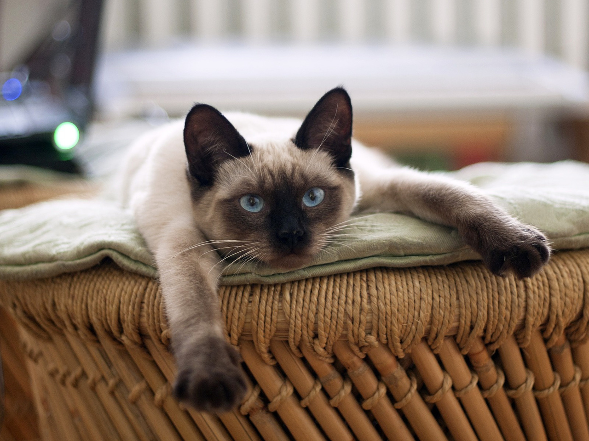

В настоящее время существует очень много различных пород кошек. Каждая порода прекрасна, и выбрать было непросто, но я всё же решила составить свой список, основываясь на внешнем виде и характере каждой кошки и своих предпочтениях. Представляю вам свой личный топ котиков!
Кошки такой породы отличаются тем, что они очень ленивы. Двигаются неспешно, довольно редко бегают, а если вы решите поиграть с ней, то она просто завалится на бочок -^o^-
Манеры поведения кошек такой породы можно назвать аристократическими: животные грациозны, аккуратны, ласковы. Они дружелюбны, общительны, но при этом ненавязчивы. Их можно назвать умеренно игривыми и активными. Плохо переносят одиночество (>_<)

Считается, что сиамские коты злые, коварные и мстительные. На самом деле поведение не зависит от породы. Если животное нападает на хозяина, значит произошло это из-за поведения самого человека. Если животное правильно воспитывать, сиамцы подарят своему хозяину всю ласку и нежность, на которую только способны (＾▽＾)
Кошки этой породы спокойные. Они хорошо приспосабливаются к жизни в любых условиях, но при этом требуют много места для постоянного движения, любят бывать на свежем воздухе, не боятся воды. Саванна легко уживается с другими домашними животными. Также данная порода довольно редкая, на сегодняшний день таких кошек всего около тысячи (•_•)
Экзоты по характеру являются великолепными питомцами. Они очень ласковые, терпеливые и спокойные. Их сложно заставить нервничать, они обладают слабым охотничьим инстинктом. Животное похоже на «плюшевую игрушку» – у него короткая густая и шелковистая шерсть (◡‿◡✿)